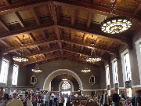
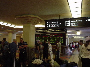
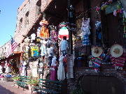
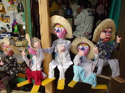
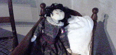
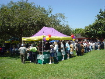
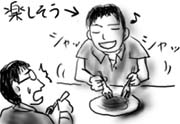

駐在の先輩は来週早々にこちらを去ってしまうので，最後の週末だし…ということでダウンタウン方面まで出かけてきました．先輩の運転で．こいつは楽チンだ(失礼)．
ユニオンステーションに車を停め，駅舎などを見て回ります．内装はなんとなく歴史を感じさせる造りで，なかなか趣があります．ここから全米を結ぶ長距離列車(アムトラック)が発着するわけですが，チェックインカウンタや荷物を預けるカウンタがあって，ちょっと飛行機ぽいです．しかし，駅舎の匂いというのはどこも同じですね(トイレと人と食べ物の匂い)．
 
その後，すぐ近くのオルベラ街に移動．L.A.で最も古いメキシコ移民の通りで，２ブロックほどの敷地に露天などが立ち並びます．中にはL.A.に現存する最古の家が建っており，入場無料で見学することができます．
 
バンジョーの流しのおっさんがいたり，なかなか陽気な通りです．時々，メキシコ物産に混じって韓国製アニメの人形が売られていますが気にしてはいけません．そして，このままでは単なる観光日記で終わってしまいそうなので，最後にL.A. 最古の家の中で見つけた写真を貼っておきます．

怖すぎ！呪われる！
街で見かけたナイスなカー シリーズ(2)

長！
思わず車内から激写．これだからデジカメを手放せません．
今日は，従業員感謝ディということで，正午になるとみんな近場の公園に移動し，ホットドッグやバーベキューをふるまわれつつ，簡単なゲームなどをして過ごします．

ホットドッグと鶏肉をパクついた後，各ゲームは事前登録が必要なので軽く無視し，先輩とフリスビーなんかをして過ごしました．遊びとは言えない，殺し合いのようなフリスビーを．意外とコントロールが難しいので，あらぬ方向に飛んで行ったりします，フリスビー．
フリスビーを追って走り回っていたら，滝の様に汗がしたたってきました．多分明日には筋肉痛が出るでしょう．フリスビーで筋肉痛．ヘボすぎる．
今日は，同じ駐在員の先輩が東海岸(ニューヨーク州)に転勤になるので，Farewell Lunchが催されました．こちらでは，みんなが集まって食事をするのは基本的にランチで，日本のようにしがらみ飲みはないので大変助かります．
料理はメキシカンだったので，タコスをぼとぼとこぼしながら歓談．マネージャからの挨拶やプレゼント贈呈が終わった頃を見計らって，店員がバンジョーをかき鳴らしながらケーキを持ってきます．でもなんか歌っているのは「ハッピーバースデー」．先輩は全然関係ありません(チームメンバーの一人が誕生日だったようです)．
しかし，先輩も主賓だからということでしっかりメキシカンハットを被らされてました．３年後の帰任時には僕があそこに(怖)！
ケーキですが，なんで生クリームが青いんでしょうか．時々こちらの人に色彩感覚にはついていけないことがあります(例:ピンク色のローストチキン)．
壮絶に甘いので1/3くらいあまらせていると，向かいの席の同僚が「食べないならくれ」と言ってくるので喜んで差し出したところ，フォークを手にすごい勢いで捏ねはじめました．狂気？
その後も同僚は，余ったケーキを集め続け，彼の皿にはこんもりとペースト状の青い物体が出来上がっていました．テーブルマナー？

ランチが終わって車まで戻ると，パーキングメータは残り４分を指していました．あやうく注禁取られるところだったよ(すごく車乗ってる人みたい←そうでもない)．